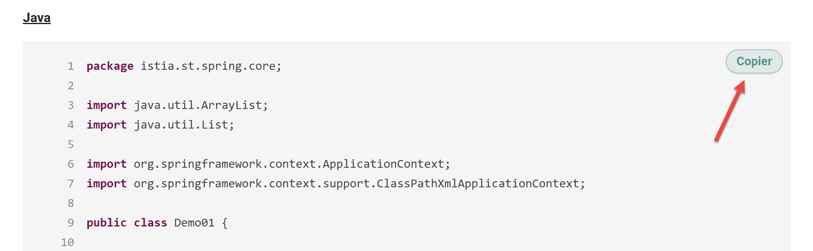

7. Le fichier de configuration des convertisseurs
Le fichier de configuration [config*.py] rassemble les informations qui peuvent changer d’un document à l’autre. Il commence ainsi :
config = {
# -------------------------------------------------------------------------
# Configuration MkDocs
# -------------------------------------------------------------------------
"mkdocs": {
# Titre du site qui apparaîtra dans l'onglet du navigateur
"site_name": "Convertir un document Word ou ODT vers un site statique HTML à l'aide de l'IA Gemini 3",
# URL de publication du site (ex: GitHub Pages)
"site_url": "https://stahe.github.io/word-odt-vers-html-janv-2026/",
# Méta-description pour le référencement (SEO)
"site_description": "Convertir un document Word ou ODT vers un site statique HTML à l'aide de l'IA Gemini 3",
# Auteur du site
"site_author": "Serge Tahé",
# Lien vers le dépôt de code source (icône GitHub en haut à droite)
"repo_url": "https://stahe.github.io/word-odt-vers-html-janv-2026",
"repo_name": "GitHub",
- ligne 1 : le fichier de configuration est un script Python. Il définit une unique variable [config]. Celle-ci est un dictionnaire qui va contenir toutes les valeurs de la configuration ;
- ligne 5 : le dictionnaire [mkdocs] va configurer le fichier [mkdocs.yml] généré par le convertissseur Gemini / ChatGPT. Ce fichier sert ensuite au script [build] pour construire un site HTML à partir du site MkDocs généré par le convertisseur ;
- lignes 5-20 : configurent le site GitHub qui va héberger le site HTML créé à partir du document ODT / DOCX (cf paragraphe 12)
Le fichier de configuration [config.py] se poursuit ainsi :
# Important : à False pour que les liens fonctionnent correctement sur GitHub Pages
# (évite les liens du type dossier/ au lieu de dossier/index.html)
"use_directory_urls": False,
# Configuration du thème Material pour MkDocs
"theme": {
"name": "material",
# Dossier contenant les surcharges (footer personnalisé, etc.)
"custom_dir": "overrides",
# Fonctionnalités de navigation activées
"features": [
"navigation.sections", # Regroupe les sections dans le menu
"navigation.indexes", # Permet de cliquer sur le titre de section
"navigation.expand", # Ouvre les menus par défaut
"toc.integrate", # Intègre la table des matières à gauche (si supporté)
"navigation.top" # Bouton "Retour en haut"
],
# Palette de couleurs (Mode Clair / Mode Sombre)
"palette": [
{
"media": "(prefers-color-scheme: light)",
"scheme": "default",
"primary": "teal",
"accent": "purple",
"toggle": {
"icon": "material/brightness-7",
"name": "Passer au mode sombre"
}
},
{
"media": "(prefers-color-scheme: dark)",
"scheme": "slate",
"primary": "teal",
"accent": "purple",
"toggle": {
"icon": "material/brightness-4",
"name": "Passer au mode clair"
}
}
]
},
- ligne 23 : cette ligne est importante. Si elle est absente, au lieu d’afficher une page HTML, le navigateur ouvrira le dossier de cette page ;
- ligne 26 : MkDocs propose plusieurs thèmes pour un site MkDocs / HTML. Ici nous avons choisi le thème « material », ligne 27 ;
- lignes 31-38 : configuration de la navigation dans le site. Celle-ci se fera à l’aide d’une table des matières située dans la colonne de gauche de la page affichée (ligne 36) ;
- lignes 40-63 : définissent deux palettes de couleurs : le mode clair (lignes 43-49) ou le mode sombre (lignes 52-61). Une icône dans la barre supérieure des pages affichées permet de passer de l’un à l’autre ;
La suite du fichier de configuration est la suivante :
# Extensions Markdown utilisées pour enrichir le contenu
"markdown_extensions": [
"admonition", # Blocs d'avertissement/info
"attr_list", # Attributs CSS personnalisés {: .class }
"pymdownx.superfences", # Blocs de code avancés
"pymdownx.mark", # Surlignage ==texte==
{
"pymdownx.highlight": {
"anchor_linenums": True,
"linenums": None # La numérotation est gérée dynamiquement par le script
}
},
"md_in_html", # Autorise le Markdown dans les balises HTML (crucial pour les listes et tableaux)
"footnotes" # Notes de bas de page [^1]
],
- lignes 64-78 : des extensions au langage MarkDown utilisé par MkDocs. Ces extensions ont été générées par Gemini à la suite de certaines de mes demandes ;
La suite du fichier de configuration est la suivante :
# Scripts et CSS additionnels
"extra_javascript": [
"javascripts/focus.js" # Script pour le mode "Focus" (plein écran)
],
"extra_css": [
"stylesheets/focus.css"
]
},
- ligne 81 : le script [focus.js] est un script Javascript généré par Gemini. Il est associé au bouton de la barre supérieure du site pour afficher ou cacher la table des matières ;
- ligne 84 : le CSS utilisé par ce bouton ;
La suite du fichier de configuration est la suivante :
# -------------------------------------------------------------------------
# Pied de page (Footer)
# -------------------------------------------------------------------------
"footer": (
"{% block footer %}\n"
" <div class=\"md-footer-meta md-typeset\">\n"
" <div class=\"md-footer-meta__inner\">\n\n"
" <div>\n"
" <a href=\"https://tahe.developpez.com\" target=\"_blank\">\n"
" https://tahe.developpez.com\n"
" </a>\n"
" <br>\n"
" Ce cours-tutoriel écrit par <strong>Serge Tahé</strong> est mis à disposition du public selon les termes de la\n"
" <em>Licence Creative Commons Attribution – Pas d’Utilisation Commerciale –\n"
" Partage dans les Mêmes Conditions 3.0 non transposé</em>.\n"
" </div>\n\n"
" </div>\n"
" </div>\n"
"{% endblock %}"
),
- lignes 87-106 : la définition du pied de page du site HTML. A été généré par Gemini à partir d’un exemple texte que je lui ai donné ;
La suite du fichier de configuration est la suivante :
# -------------------------------------------------------------------------
# Configuration supplémentaire (Analytics, etc.)
# -------------------------------------------------------------------------
"extra": {
"analytics": {
"provider": "google",
"property": "G-XXXXXXXX"
}
},
# -------------------------------------------------------------------------
# Détection du Titre du Document
# -------------------------------------------------------------------------
"document_title": {
# Styles ODT à considérer comme le titre principal du document (H1 global)
"style_names": [
"P1"
],
# CSS appliqué à ce titre dans le Markdown généré
"css": "font-size: 28px; font-weight: bold; margin-bottom: 1em; line-height: 1.2; color: #2c3e50;"
},
- lignes 110-115 : définition du marqueur Google Analytics (GA) qui va permettre de suivre les visites du site ;
- ligne 113 : mettez-là votre marqueur GA ;
- lignes 120-127 : le style du titre du document, celui qui est présent dans le document ODT /DOCX avant le premier titre de niveau 1. Le style indiqué ligne 123 change avec chaque Document ODT. En revanche il peut être constant (‘Titre’) pour les documents DOCX. Par défaut, le convertisseur logue les styles de tous les paragraphes du document ODT / DOCX qui précède le premier titre de niveau 1. Il faut donc faire une première exécution, repérer le style du paragraphe qu’on veut mettre en titre, puis mettre ce style ligne 123 ;
- ligne 126 : le style CSS que vous voulez donner au titre du document. Ce titre est dans la page « Accueil », la première page affichée lorsque le site s’ouvre ;
La suite du fichier de configuration est la suivante :
# -------------------------------------------------------------------------
# Gestion du Code Source
# -------------------------------------------------------------------------
"code": {
# Mot-clé dans le style ODT pour identifier un bloc de code
"style_keywords": [
"code"
],
# Langage par défaut si aucune détection ne fonctionne
"default_language": "text",
# Style visuel du code enrichi (gras/italique/couleur préservés depuis ODT)
"rich_line_height": "20px",
"rich_font_family": "Consolas, 'Courier New', monospace",
"rich_font_size": "15px",
# Règles de détection automatique du langage basé sur le contenu
"detection_rules": {
"csharp": [
"using", "Console.WriteLine", "public static void Main", "WebMethod",
"TryParse", "EventArgs", "String.Format", "System.Web.Services"
],
"java": [
"System.out.println", "public static void main(String", "package",
"JUnitTest", "Class.forName", "PreparedStatement", "private static void",
"private void", "getAgendaMedecinJour", "@PostConstruct", "@ResponseBody",
"@RequestMapping", "getMedecin", "@Entity", "@Autowired", "@Bean",
"Serializable", "getClient", "getCreneau", "getRv", "PostAjouterRv",
"PostSupprimerRv", "@EnableJpaRepositories", "@Component", "getAgendaMedecinJour",
"getResponse", "getMessagesForException", "getBase64", "ajouterRv",
"Reponse", "getPartialViewAgenda", "setModelforAgenda", "ActionContext",
"getActionContext", "PostLang", "PostUser", "PostGetAgenda", "@NotNull",
"@EnableAutoConfiguration", "HttpSecurity"
],
"html": [
"<html>", "</div>", "<body>", "<script>", "href=", "<span>", "<p>",
"<h2>", "<form", "<table", "<input"
],
"sql": [
"SELECT", "INSERT INTO", "UPDATE", "DELETE FROM", "WHERE",
"CREATE TABLE", "AlTER TABLE"
],
"python": [
"def", "import", "print(", "from"
],
"xml": [
"<?xml", "<project", "<version>", "<configuration>", "<build>",
"<dependency>", "<properties>", "<configuration>", "<start-class>"
],
"javascript": [
"use strict", "console.log", "let", "constructor", "async", "export"
],
"php": [
"<?php", "declare", "require"
],
"vbscript": [
"Option", "Dim", "Explicit"
]
}
},
- lignes 128-187 : cette configuration est utilisée pour les codes en « plain text » qui n’ont pas initialement de coloration syntaxique. Ces lignes visent à leur donner une selon le langage utilisé dans le bloc de code ;
- lignes 133-135 : les blocs de code sont repérés par leurs styles dans le document ODT / DOCX. Il peut y en avoir plusieurs. Ligne 134, on met tous les mots clés qui permettent de détecter un style de code. Dans mes documents, tous mes styles de code ont le mot « code » dans leur nom. Et aucun autre style n’a ce mot dans son nom. Donc je peux me contenter de mettre un unique mot clé. S’il y en a plusieurs on les met en les séparant par des virgules ligne 134 ;
- lignes 145-187 : les chaînes de caractères qui permettent d’identifier le langage d’un bloc de code.. Certains mots clés peuvent se retrouver dans divers langages. Le convertiseur sélectionne le langage pour lequel il a trouvé le plus de mots clés. Le principe est simple : vous regardez vos codes, sélectionnez des mots clés caractéristiques et vous les mettez dans ces lignes pour le bon langage. Notez que vous ne pouvez pas mettre n’importe quoi comme nom de langage : il faut utiliser les noms reconnus par MkDocs ;
- lignes 139-142 : ces lignes concernent les blocs de code enrichis (gras, italique, soukignage, surlignage, couleur des caractères). Ces blocs ne subissent pas le traitement des blocs de code « plain text ». Ils sont rendus à l’identique dans le HTML ;
- ligne 140 : fixe la hauteur de ligne des lignes de code ;
- ligne 141 : fixe la police CSS du bloc de code ;
- ligne 142 : fixe la taille des caractères ;
- ligne 137 : fixe le langage par défaut. Dans le cas d’un bloc de code « plain text », si aucun langage n’est détecté, le langage par défaut sera « text ». Pour MkDocs, cela signifie un bloc de code sans coloration syntaxique. C’est par exemple, le cas de résultats d’exécution ;
La configuration se termine de la façon suivante :
# -------------------------------------------------------------------------
# Fichiers statiques à copier à la racine du site
# -------------------------------------------------------------------------
"files_to_copy": [
"googleXXXXXX.html",
"robots.txt",
"word-odt-vers-html-janv-2026.pdf"
],
# Mode debug : affiche les styles rencontrés avant le premier titre
"debug": True
}
- lignes 191-195 : la liste des fichiers à copier à la racine du site HTML ;
- lignes 192-193 : le marqueur Google Analytics du site et le fichier [robots.txt] qui autorise l’exploration du site par les moteurs de recherche ;
- ligne 194 : le PDF de ce document rendu disponible au téléchargement ;
- ligne 198 : [debug] à True autorise les logs des styles des paragraphes qui précèdent le premier titre de niveau 1 du Document ODT / DOCX. Ce sont dans ces logs qu’on trouvera le style exact du paragraphe devant servir de titre dans la page d’accueil du site ;
Au final, lorsqu’on passe d’un Document ODT / DOCX à l’autre, on modifiera les lignes [6-20, 127-129, 201] et certaines lignes des chaînes clés des langages. Le reste ne change pas.
D’autres éléments ont été ajoutés au fichier de configuration dans les dernières versions du convertisseur :
Bouton [copier]
Sur les blocs de code contenant un langage reconnu, il y a un bouton [Copier] :
|  |
Ce bouton permet de copier le bloc de code dans le presse-papier. Les numéros de ligne ne sont pas inclus. Le comportement de ce bouton est contrôlé par les lignes suivantes du fichier de configuration [config.py] :
# ---------------------------------------------------------------------
# Bouton [Copier] dans les blocs de code (copie dans le presse-papier)
# ---------------------------------------------------------------------
# Active/désactive l'ajout du bouton [Copier] (True = activé)
"copy_button": True,
# Libellé du bouton avant copie
"copy_label": "Copier",
# Libellé temporaire après une copie réussie
"copy_copied_label": "Copié",
# Si True, le bouton n'apparaît que si le langage du bloc est "reconnu"
# (par ex. language-java / language-python, etc.)
"copy_only_recognized_language": True,
# Seuil minimum de lignes pour afficher le bouton :
# - 0 => pas de seuil (tous les blocs "langage reconnu" auront le bouton)
# - >0 => le bloc doit avoir au moins ce nombre de lignes
"copy_min_lines": 0,
# Si True, on autorise aussi le bouton sur les blocs Pygments "colorés"
# même si la classe language-xxx n'est pas explicitement présente.
# Utile pour certains rendus de code (highlighttable) où la coloration existe
# mais où le langage n'apparaît pas dans une classe CSS.
"copy_allow_pygments_heuristic": True,
# Apparence du bouton [Copier] (CSS inline : uniquement des déclarations,
# sans accolades). Permet de personnaliser facilement le look.
# ---------------------------------------------------------------------
# Style "Material-like" pour le bouton [Copier]
# (CSS inline : uniquement des déclarations, sans accolades)
# ---------------------------------------------------------------------
"copy_style": {
# Conteneur du bloc de code : nécessaire pour positionner le bouton
"container": "position: relative;",
# Style normal du bouton
"btn": (
"position:absolute; top:.5rem; right:.5rem; "
"display:inline-flex; align-items:center; justify-content:center; "
"gap:.35rem; "
"padding:.25rem .6rem; "
"font-size:.72rem; font-weight:600; letter-spacing:.01em; "
"line-height:1.2; "
"border-radius:999px; "
"border:1px solid rgba(0,150,136,.45); "
"background:rgba(0,150,136,.12); "
"color:rgb(0,150,136); "
"box-shadow:0 1px 2px rgba(0,0,0,.10); "
"backdrop-filter:saturate(180%) blur(6px); "
"cursor:pointer; user-select:none; "
"transition:transform .08s ease, box-shadow .12s ease, background .12s ease;"
"z-index:5;"
),
# Survol : un peu plus “élevé” (comme Material)
"btn_hover": (
"background:rgba(0,150,136,.20); "
"box-shadow:0 3px 10px rgba(0,0,0,.18); "
"transform:translateY(-1px);"
),
# État “copié” : léger fade
"btn_copied": "opacity:.85;"
},
},
Le lecteur suivra les commentaires pour contrôler le bouton.
Les images
De même le comportement des images cliquables est contrôlé par le lignes suivantes du fichier de configuration :
# -------------------------------------------------------------------------
# Images : paramètres d'ombre (zoom / lightbox)
# -------------------------------------------------------------------------
"images": {
"shadow": {
# Active/désactive l'ombre autour des images
"enabled": True,
# Rayon d'arrondi appliqué aux images (ex: "0px", "4px", "8px", ...)
"border_radius": "8px",
# Ombre par défaut sur les images "zoomables"
"zoomable": "0 8px 24px rgba(0,0,0,.28), 0 18px 60px rgba(0,0,0,.20)",
# Ombre au survol (hover) des images "zoomables"
"zoomable_hover": "0 12px 30px rgba(0,0,0,.32), 0 26px 80px rgba(0,0,0,.22)",
# Ombre lorsque l'image est affichée en grand (lightbox)
"lightbox": "0 24px 80px rgba(0,0,0,.65)",
}
},